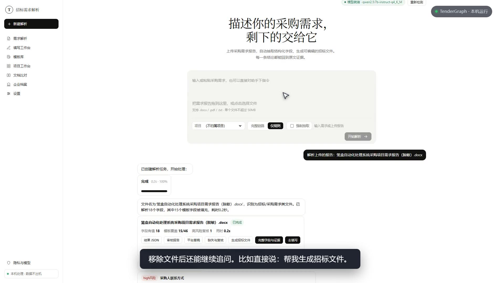
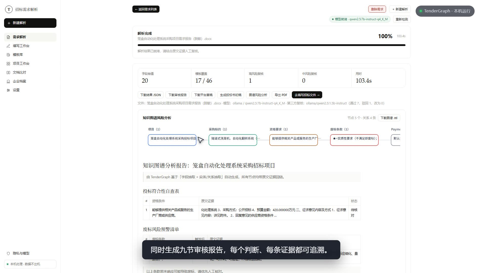
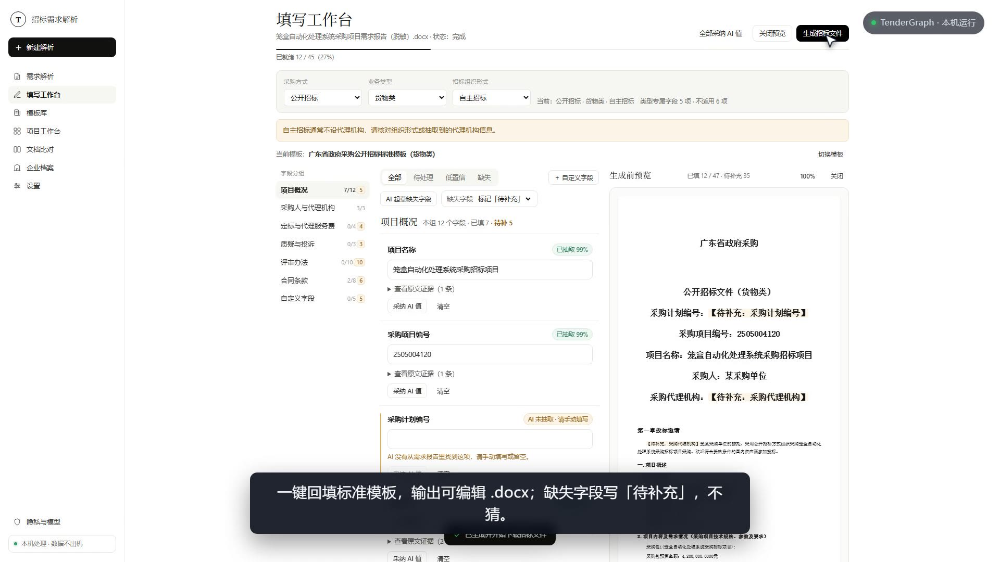

数据来自演示样本实测，用于说明链路，不代表所有项目。
投标文件编制，卡在三件事上
不是缺一个“会写”的模型，而是缺一条能把信息读准、把依据留住、把风险挑出来的链路。
信息散落在上百页里
资质要求、评分点、废标条款分布在不同章节和表格中。漏看一条，可能就是废标。
同一条信息反复填写
项目名称、预算、交付期会在正文、附表和合同条款中重复出现，改一处就要核对多处。
不敢直接相信模型
模型可能补出一个“看起来对”的值。没有原文依据，就不能进入正式文件。
一条可核验的解析链路
规则负责确定性，模型负责补缺；证据回链与独立复核负责一票否决。
文档解析
.docx / .pdf / .txt，先做文档类型校验，不是采购文件就不硬抽。
规则抽取
项目名称、预算、期限等可直接读取的字段由确定性规则产出，不依赖模型。
模型补缺
本地 Ollama 只补规则没读到的字段，每个值必须回链原文证据。
校验与复核
金额日期归一化、跨字段勾稽、第三方模型独立复核，只做减法和修正。
模板回填
字段映射到标准模板占位符，缺失项写「待补充」，输出可编辑 .docx。
不是“让模型写一份”，而是让每个值有出处
从解析、核对到成稿，保留同一套字段、证据和复核状态，避免在多个工具之间来回搬运。
证据可回链
每个模型值都带 block_id 与原文引文；引文里找不到该值，就直接丢弃，不用默认值冒充抽取结果。
第三方独立复核
第二个本地模型只判断 support / reject / replace，不新增字段；驳回项保留并标记存疑，交人工确认。
规则优先
能直接读到的字段不交给模型猜。模型不可用时仍可运行规则链路，保证离线与回归测试。
默认本地闭环
默认只访问本机 Ollama，文档不出内网；Web 服务默认监听 127.0.0.1，前端资源随程序本地分发。
知识图谱风险分析
把孤立字段升级为「资质—评分—废标」关联分析，生成投标符合性自查表与废标风险预警。
可编辑成稿与审核报告
字段回填标准模板，输出可编辑 .docx；同时生成九节审核报告，每个判断、每条证据可追溯。
从对话到成稿，一条界面走完
演示使用脱敏样本，页面中的单位名、电话、邮箱、人名均为虚构值。



3 分 49 秒，看完整条链路
从上传、规则解析、模型补缺、第三方复核，到知识图谱、模板回填与生成下载。
演示数据：完整链路字段有值 20，模板覆盖 17/46，高风险复核 1 项，用时 103.4 秒；其中 11 个字段由本地模型补出或确认。
第三方复核共检查 8 项，通过 7 项、驳回 1 项、改写 0 项。被驳回的采购代理机构联系方式保留并标记存疑，不静默删除。
下载字幕文件可信不是口号，是三条硬约束
-
1
证据不通过，就丢弃
模型产出的值必须带 block_id 和原文 quote，且值真的出现在引文里；否则不进入结果。
-
2
复核只做减法与修正
第三方复核只给 support / reject / replace，不新增字段；冲突时两个候选都保留并标记。
-
3
高风险动作先确认
生成招标文件属于高风险动作，对话里先出确认卡；取消不会执行任何操作。
一条命令，在本机跑起来
默认使用本机 Ollama；没有模型时可用 --no-llm 只跑规则层。
# 克隆并安装 git clone https://github.com/Ting54zhen/tender_extractor.git cd tender_extractor python -m pip install -e . # 启动本地网页（127.0.0.1:8765） python -m tender_extractor.web
# 完整链路：规则 + 本地模型 + 校验复核 python -m tender_extractor extract "采购需求.docx" # 无模型环境：仅规则，仍可回归 python -m tender_extractor extract "采购需求.docx" --no-llm # 生成可编辑招标文件 .docx python -m tender_extractor generate "采购需求.docx"